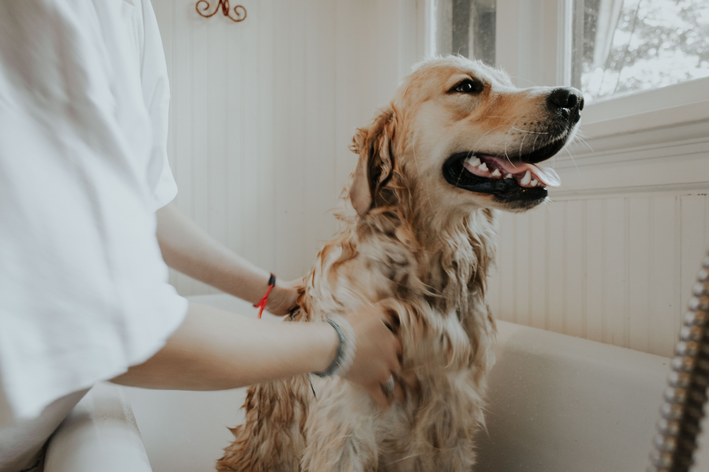

Pelagem

Pelagem longa
Pelagem longa
Nosso serviço de banho e tosa é perfeito para deixar seu cãozinho limpo e cheiroso, clique abaixo caso queira esse serviço para doginhos de porte medio-grande e de pelagem longa.

Pelagem curta
Nosso serviço de banho e tosa é perfeito para deixar seu cãozinho limpo e cheiroso, clique abaixo caso queira esse serviço para doginhos de porte medio-grande e de pelagem curta.